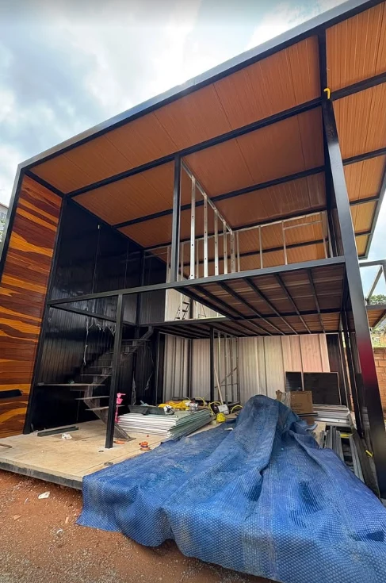

Telhados
Para cobrir uma garagem, uma área externa ou outro espaço. Conte o que precisa ficar protegido e envie uma foto do local.
Orçar telhado
Precisa cobrir uma área, montar uma estrutura metálica ou soldar uma peça? Fale com a JJS Serralheria em Contagem, MG.
Para cobrir uma garagem, uma área externa ou outro espaço. Conte o que precisa ficar protegido e envie uma foto do local.
Orçar telhadoPara projetos com vigas, pilares e mezaninos. Envie o desenho, fotos do espaço ou as medidas que você já tem.
Orçar estruturaPara unir peças metálicas ou avaliar um reparo em uma união existente. Mostre a peça e indique onde precisa de solda.
Orçar soldaConfira fotos de estruturas metálicas, da montagem ao acabamento da cobertura.
Veja como a estrutura metálica, a escada e a cobertura se encaixam no projeto.
Diga se você precisa de telhado, estrutura metálica ou solda. Envie fotos do local ou da peça e inclua as medidas que você tiver.
Pedir orçamento pelo WhatsAppAbra o WhatsApp pelo botão da página e conte o que precisa. Você pode mandar fotos e medidas na própria conversa.
Sim. Envie as fotos e descreva o serviço para iniciar a conversa com a JJS.
Na Rua João Militão, 43, no bairro Fonte Grande, em Contagem. Use Como chegar na seção de localização para abrir a rota.
Para pedir orçamento, conte o que você precisa e envie fotos do local pelo WhatsApp.